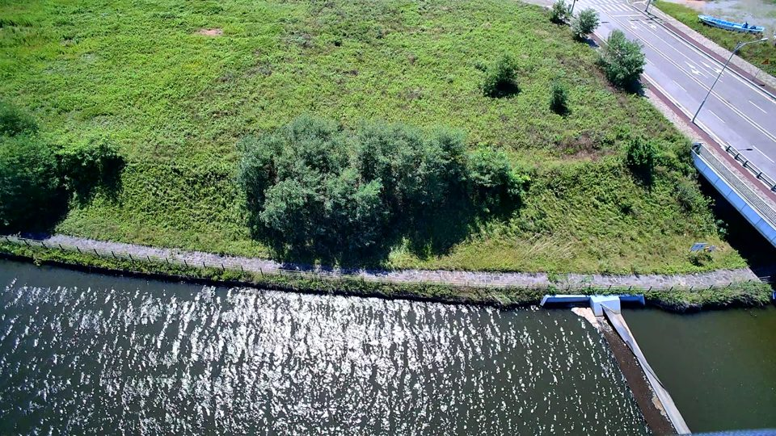
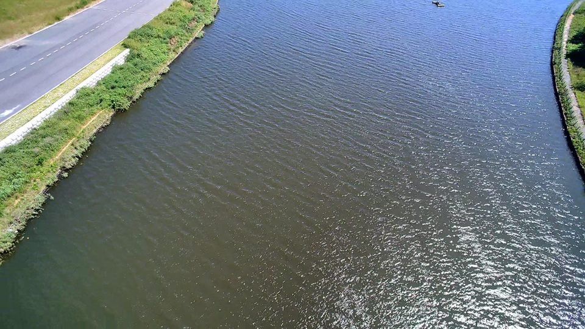

전체 분석 수치는 유지합니다. 사진이 없는 격자는 수치만 표시합니다. 사진은 960px로 축소했으며 원본 품질 재평가용이 아닙니다.


위성영상 촬영일은 UAV 영상과 다릅니다. 배경 지도 요청 시 Esri에 해당 지역의 타일 좌표가 전송됩니다. UAV 영상과 분석 자료는 로컬에 유지됩니다.
위치 보기로 지도에서 확인하세요. 번호는 우선순위이며 비행 순서가 아닙니다. 이미 제안한 범위의 이득은 중복 계산하지 않습니다.
격자 GeoJSON · 격자 CSV · 촬영 후보 GeoJSON · 분석 조건/요약